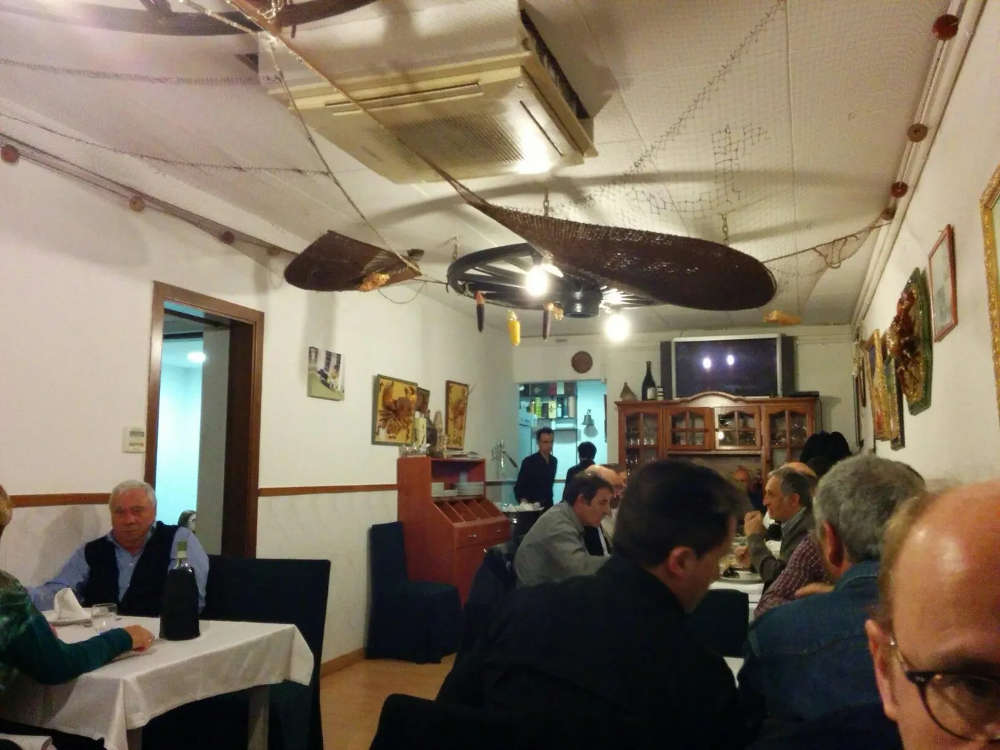
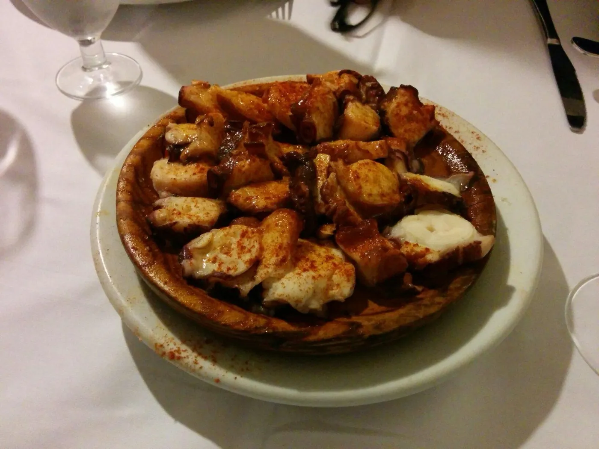

Pulpo á feira
Cocido a punto, troceado con tijera sobre cachelos, regado con aceite de oliva, pimentón dulce de la Vera y sal gorda. El plato gallego por excelencia, sin atajos.
Una marisquería gallega escondida en una calle pequeña del Baix Guinardó, sin pretensiones. Producto fresco que llega de la lonja cada día, el centollo más comentado de Barcelona y un albariño bien frío para acompañar.

La carta no es fija: depende de la lonja y de la temporada. Esto es lo que sí encontrarás, casi siempre, en la mesa.
Cocido a punto, troceado con tijera sobre cachelos, regado con aceite de oliva, pimentón dulce de la Vera y sal gorda. El plato gallego por excelencia, sin atajos.
Masa fina y crujiente, generosa de relleno. La de atún con pimiento y cebolla pochada, hecha como en casa. Para compartir antes del marisco.
El cocido humilde de Galicia: lacón cocido lentamente, grelos de temporada, cachelos y chorizo. Reconfortante, sobre todo cuando aprieta el frío en Barcelona.
De pasta blanda y corteza fina, sabor mantecoso y suave. Lo servimos cortado en cuñas con un poco de membrillo. Una pausa entre el mar y el postre.
Cigalas, mejillones de las rías, almejas, navajas, centollo y bogavante según mercado. Te contamos al llegar lo que ha entrado fresco esa mañana y cómo te lo preparamos.
Carta corta y bien escogida de albariños de las Rías Baixas, godellos de Valdeorras y algún ribeiro. Bien frío, sin pretensiones, para acompañar pescado y marisco.
En Galicia, la cocina no se discute mucho: si el producto es bueno, se respeta. Por eso nuestra carta cambia cada día. Lo que ha entrado fresco en la lonja por la mañana es lo que servimos por la noche. Centollos del Cantábrico, cigalas de Cedeira, mejillones de las rías, pulpo cocido a punto. No hay menú impreso con precios fijos porque el mar no funciona así: te contamos lo que hay, lo que recomendamos y lo que vale ese día.
Trabajamos con proveedores gallegos de toda la vida, gente que conoce a los barcos y a las cofradías. Esa cadena corta — mar, lonja, transporte refrigerado, plancha — es lo que marca la diferencia. Lo demás es discurso.

A estrela Galega lleva décadas en la calle Rosalía de Castro, en el barrio del Baix Guinardó. Un local pequeño y honesto, sin decoración pretenciosa: mesas vestidas con sencillez, paredes claras, la televisión puesta a media tarde, la cocina vista, una estrella de mar grabada en la puerta de cristal. La gente del barrio lo conoce de siempre; los de fuera llegan por el boca a boca o porque alguien les contó que aquí se come el mejor centollo de Barcelona.
Detrás de la barra y de la cocina sigue una familia gallega que mantiene la forma de hacer las cosas: producto fresco, técnica sencilla, raciones generosas, atención cercana. No hay carta impresa con fotos brillantes ni cuentas inflables sorpresa: te explicamos qué hay, qué entra esa mañana y cuánto vale. Si vuelves, te reconocerán; si vienes por primera vez, te lo contarán todo con paciencia.
Sí, recomendamos reservar siempre, especialmente fines de semana y festivos. Puedes llamarnos al 934 35 50 80 o usar el formulario de reserva de la página: te llamaremos para confirmar fecha, hora y comensales.
Trabajamos sobre todo a la carta con producto fresco según mercado, pero a mediodía entre semana ofrecemos sugerencias de menú según lo que llega de la lonja. Lo mejor es preguntar al llegar: el equipo te cuenta lo que hay ese día.
Sí. Buena parte de nuestra carta es naturalmente sin gluten: pescados a la plancha, marisco fresco, pulpo á feira, lacón. Indícanoslo al reservar o al sentarte para que adaptemos la mesa y evitemos contaminación cruzada.
Depende del día y de lo que ha llegado fresco esa mañana. Si vienes una primera vez: pulpo á feira con cachelos, empanada gallega y, según temporada, centollo o cigalas gallegas. Un albariño bien frío para acompañar y poco más.
Carrer de Rosalía de Castro, 26 08025 Barcelona · Baix Guinardó
Esto era una demo
Esta web era una muestra de lo que podríamos hacer para A estrela Galega. Si te ha gustado y quieres una para tu negocio, escríbenos — Pedro te responde personalmente y la web final la adaptamos al 100% a tu gusto.
Pedro Núñez · Impacto Digital